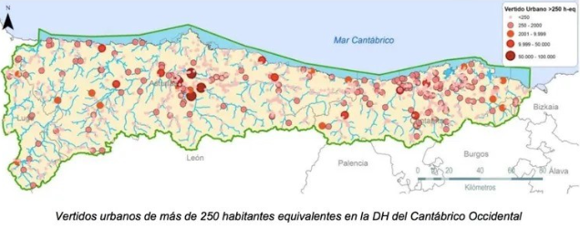

Principales focos de contaminación de origen urbano en Asturias
Puntos con autorización de vertidos industriales en Asturias

El agua es un recurso vital por su papel en la economía, biodiversidad y la cultura de la región.
En Asturias hay numerosos ríos y lagos que impulsan sectores como la agricultura, la ganadería y el turismo.
La presencia del agua ha moldeado paisajes y tradiciones locales, convirtiendo a Asturias en un paraíso natural.
El sistema de abastecimiento de agua es gestionado principalmente por el Consorcio de aguas de Asturias (CASADA).
CASADA cubre el suministro de agua potable y la depuración de aguas residuales.
El consorcio cuenta con dos grandes sistemas de abastecimiento situados en el centro y en la zona occidental de la provincia.
Estos sistemas abarcan la siguiente red de infraestructuras:
CASADA efectúa controles exhaustivos y rigurosos sobre la calidad de agua tanto potable como depurada para retorno al medio.
Este proceso se divide en varias etapas:
Además de llevar una vigilancia y control del saneamiento del agua mediante los programas de seguimiento, es fundamental actuar
en el origen de los focos de contaminación para reducir el impacto que distintas actividades provocan en los ecosistemas acuáticos.
En Asturias 22 ríos y embalses reciben puntualmente vertidos sin depurar y/o aguas residuales
Son cuatro los embalses asturianos considerados como zonas sensibles ante riesgo de contaminación.
Los principales focos de contaminación en asturias son los siguientes: